📖 王阳明《传习录》：世间最厉害的改命术，不是烧香拜佛，不是风水算卦，而是本心、行动与良知
Wang Yangming Instructions for Practical Living The Worlds Most Powerful Destiny-Altering Art
为什么很多底层的人，明明很努力改变，却越变越内耗depletion[dɪˈpliːʃən] n. 内耗？
这个问题，王阳明在500年前就告诉了我们答案answer[ˈænsər] n. 答案。
人世间的一切难题，都不在外部exterior[ɪkˈstɪriər] n. 外部，而要通过向内求来解决。
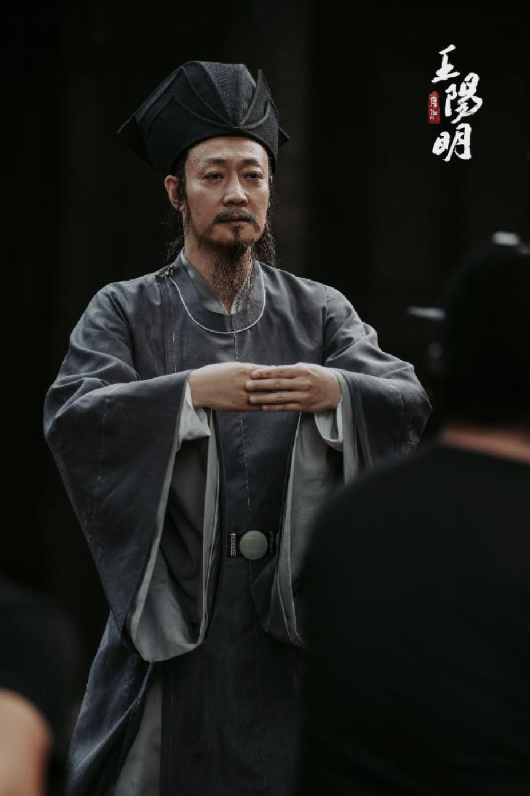
王阳明用自己跌宕起伏的一生证明了——一个历经磨难hardship[ˈhɑːrdʃɪp] n. 磨难的人，不断向内求索、做到知行合一，就足以超凡入圣。
5岁还不会说话，被怀疑suspect[səˈspekt] v. 怀疑是哑巴、痴儿。
12岁丧母，幼年失怙，在继母stepmother[ˈstepmʌðər] n. 继母的冷眼下长大。
22岁考进士落榜flunk[flʌŋk] v. 落榜，25岁再次落榜。
35岁，人生彻底跌入深渊abyss[əˈbɪs] n. 深渊——
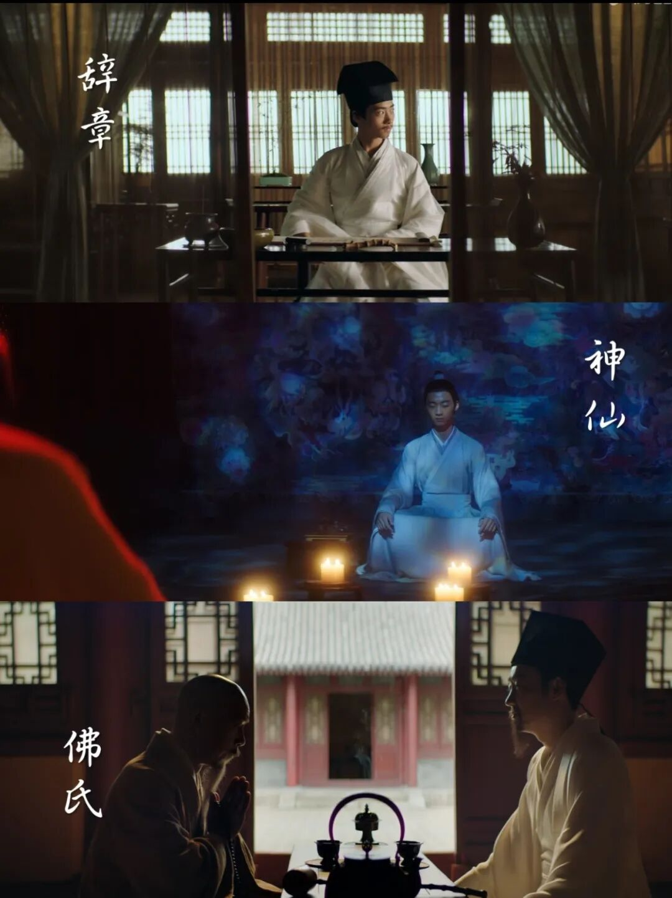
因上书弹劾impeach[ɪmˈpiːtʃ] v. 弹劾权倾朝野的宦官刘瑾，触怒天威。
当众廷杖bastinado[ˌbæstɪˈneɪdoʊ] n. 廷杖四十，血肉横飞，筋骨欲裂。
一纸贬demote[dɪˈmoʊt] v. 贬谪书发配贵州龙场。随从一个接一个病倒、死去perish[ˈperɪʃ] v. 死去。
绝望despair[dɪˈsper] n. 绝望中，他也给自己找了一口石棺，随时准备迎接死亡。
然而史书记载，就是在这样九死一生的绝境predicament[prɪˈdɪkəmənt] n. 绝境中，
一个深夜，他忽然仰天长啸howl[haʊl] v. 长啸：
“圣人之道，吾性自足sufficiency[səˈfɪʃənsi] n. 自足，不假外求！”
这就是中国思想史上惊天动地earthshaking[ˈɜːrθʃeɪkɪŋ] adj. 惊天动地的的“龙场悟道”。
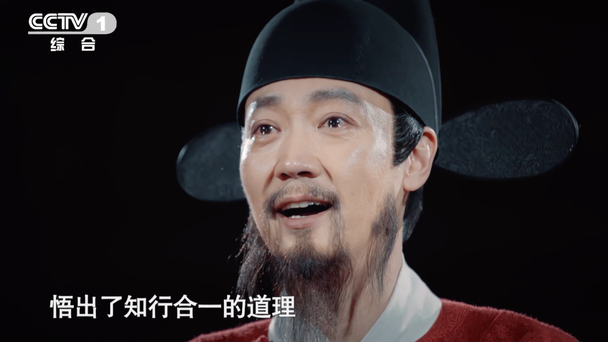
这一句话威力impact[ˈɪmpækt] n. 威力有多大？直接炸碎了中国人数千年的认知cognition[kɒɡˈnɪʃən] n. 认知框架。
从前我们认为：道理在万物之中，我们是渺小insignificant[ˌɪnsɪɡˈnɪfɪkənt] adj. 渺小的的求学者，必须去适应、去学习。
心外无物，你不需要向任何外界标准低头，你就是自己的尺度yardstick[ˈjɑːrdstɪk] n. 尺度。
从此，一个手无缚鸡之力的书生scholar[ˈskɒlər] n. 书生，凭借“心学”的力量——
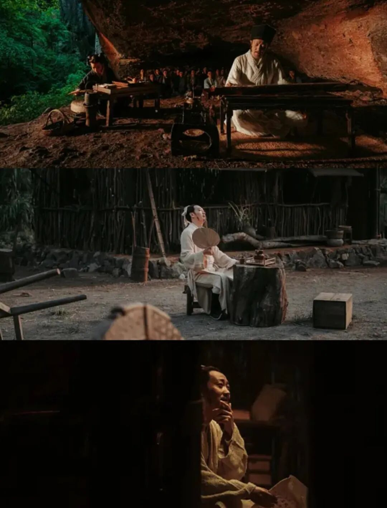
35天平定suppress[səˈpres] v. 平定宁王叛乱，以虚击实、以少胜多，被后世誉为 “大明军神”；
一生立德、立功、立言，三不朽immortal[ɪˈmɔːrtl] adj. 不朽的全占，千古唯一人。
阳明心学也从此破茧而出，如狂风gale[ɡeɪl] n. 狂风吹遍大明山河——
上至内阁首辅chancellor[ˈtʃænsələr] n. 首辅，下至贩夫走卒，人人争读《传习录》。
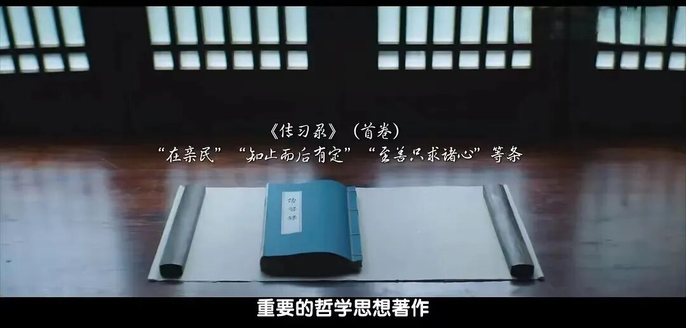
东传日本、朝鲜，西启欧洲启蒙enlightenment[ɪnˈlaɪtənmənt] n. 启蒙思想，直接影响了明治维新的思想根基。
日本名将东乡平八郎，随身佩戴一印章seal[siːl] n. 印章，上刻七个字：
稻盛和夫更是直言：我一生最崇拜admire[ədˈmaɪər] v. 崇拜的中国人，就是王阳明。
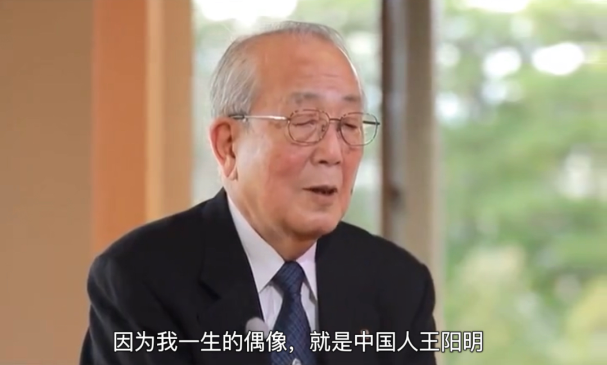
500年后的今天，仍然有无数人在王阳明的心学金句aphorism[ˈæfərɪzəm] n. 金句中寻找力量：
“心即理”“致良知conscience[ˈkɑːnʃəns] n. 良知”“知行合一”
“事上磨，心上炼refine[rɪˈfaɪn] v. 炼”“破山中贼易，破心中贼难”……
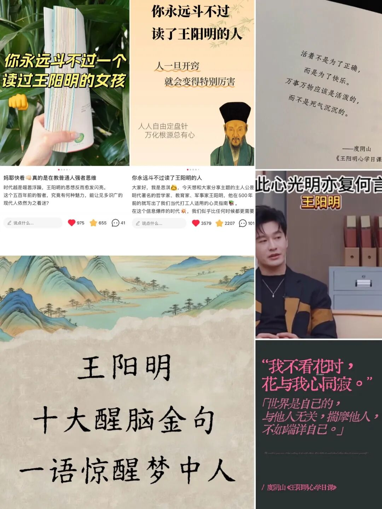
然而讽刺irony[ˈaɪrəni] n. 讽刺的是，99%的人都只把它们当鸡汤、当道德口号，看过就忘。
极少有人真正读懂这三言两语背后的、足以颠覆subvert[səbˈvɜːrt] v. 颠覆整个人生观的思想核弹。
甚至还有人质疑：王阳明是不是被神化deify[ˈdeɪɪfaɪ] v. 神化了？是不是后人吹brag[bræɡ] v. 吹嘘过了？
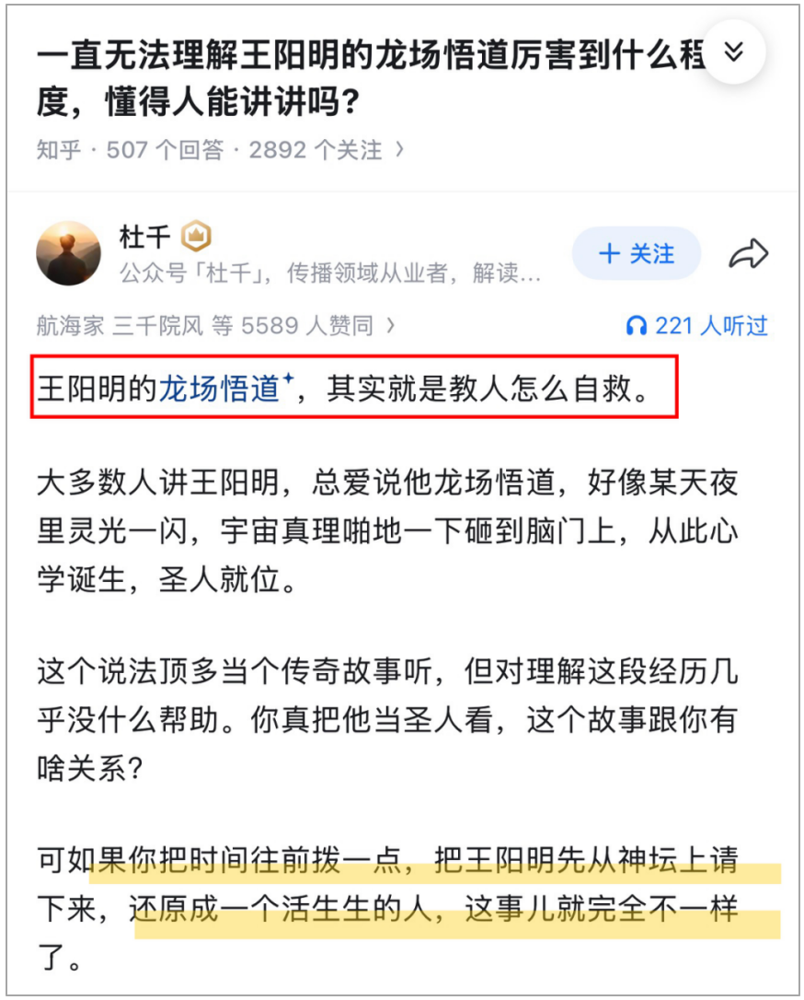
今天，作为一个被阳明心学从泥潭mire[maɪər] n. 泥潭里拽出来的普通人，我只想说——
“你永远都斗contend[kənˈtend] v. 争斗不过一个读过王阳明的人。”
因为阳明心学，根本不是什么心灵鸡汤，而是真正让人脱胎换骨regenerate[rɪˈdʒenəreɪt] v. 脱胎换骨的认知系统！
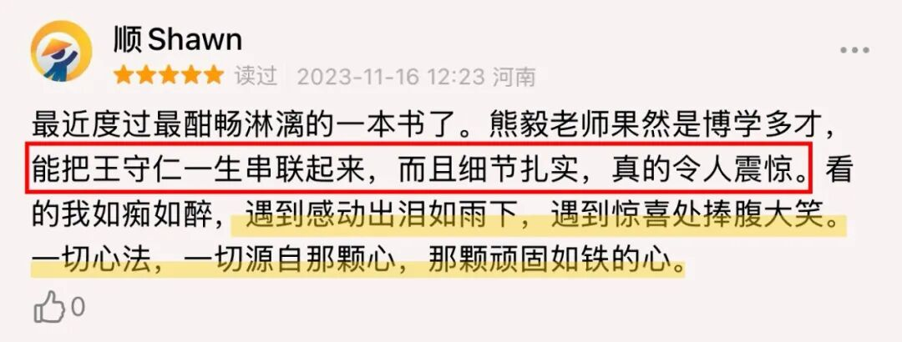
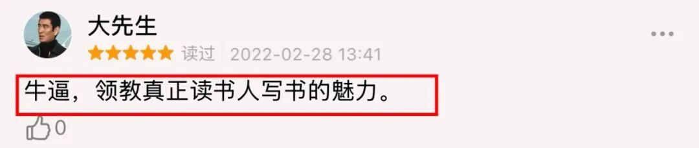
只不过市面上解读interpret[ɪnˈtɜːrprɪt] v. 解读阳明心学的作品，多如过江之鲫。
要么是晦涩obscure[əbˈskjʊr] adj. 晦涩的的学术论文，读三页就犯困；
要么是励志成功学，把心学讲成了“心想事成”的玄学metaphysics[ˌmetəˈfɪzɪks] n. 玄学。
直到读到这套，罗永浩、罗振宇、樊登争相推荐recommend[ˌrekəˈmend] v. 推荐，豆瓣评分9.2的
熊逸版《王阳明：一切心法mindset[ˈmaɪndset] n. 心法》
一切关于焦虑anxiety[æŋˈzaɪəti] n. 焦虑、内耗的困惑，迎刃而解
彻底颠覆你对“心学”的认知perception[pərˈsepʃən] n. 认知


他是中国当代最“神秘enigmatic[ˌenɪɡˈmætɪk] adj. 神秘的”、最硬核的学者之一。
著作等身，却极其低调modest[ˈmɒdɪst] adj. 低调的，鲜少公开露面。
他所著的中国思想史系列，豆瓣均分9.0以上，是无数知识分子intellectual[ˌɪntəˈlektʃuəl] n. 知识分子的案头书。
罗振宇曾评价：熊逸有一种天赋talent[ˈtælənt] n. 天赋，就是把最艰深的思想，用最通透、最过瘾的方式讲给你听。
豆瓣上，更是一片激动赞叹acclaim[əˈkleɪm] n. 赞叹——
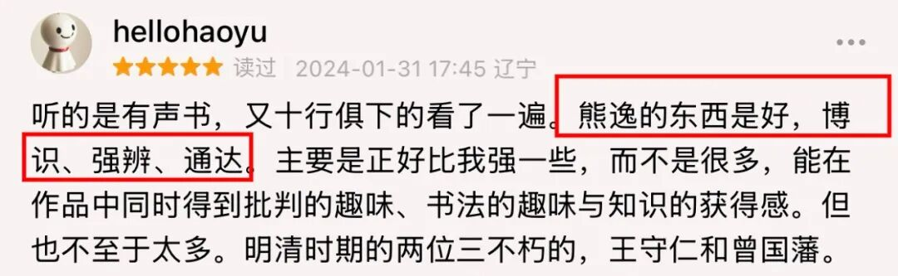
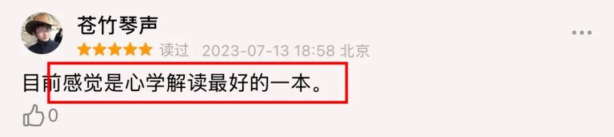
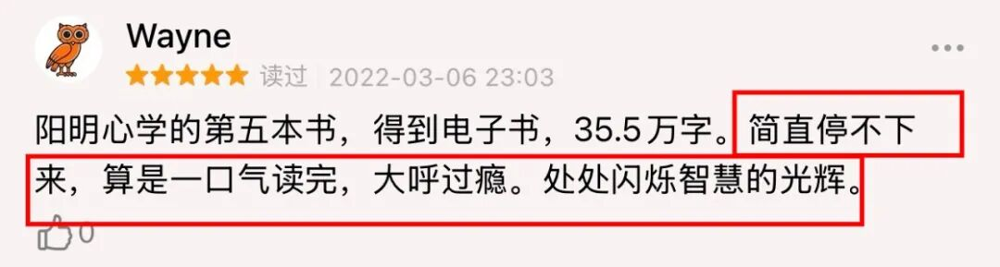
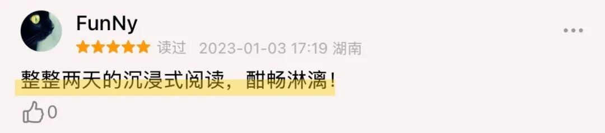
这套《王阳明：一切心法》，不是盲目吹捧adulation[ˌædʒəˈleɪʃən] n. 吹捧，不是跪着读圣人——
而是结合王阳明一生跌宕起伏的经历，掰开揉碎，用现代人的思维重新审视examine[ɪɡˈzæmɪn] v. 审视心学。
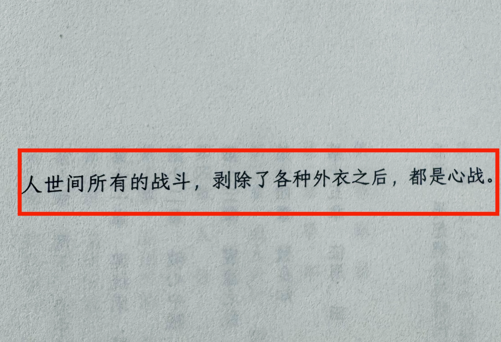
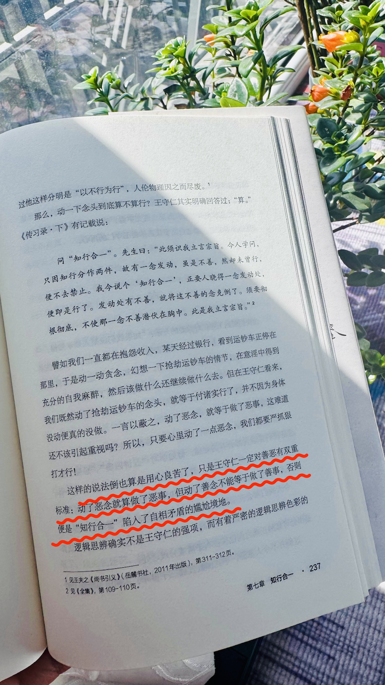
毫不夸张，我边吃饭边读的样书，本想随意翻翻browse[braʊz] v. 翻阅，结果不知不觉就陷进去了，
越读越发现，这也太写得太深刻profound[prəˈfaʊnd] adj. 深刻的了，如同当头棒喝。
原来，我们99%的人都读错misread[ˌmɪsˈriːd] v. 读错了王阳明！
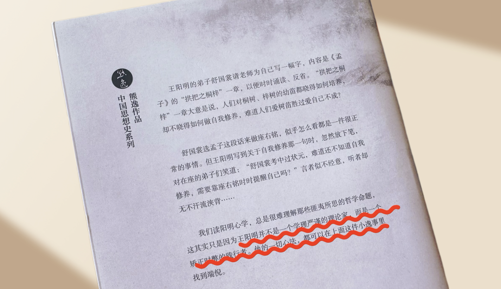
别人可能会解读成简单的，凡事向内求，切记向外索取solicit[səˈlɪsɪt] v. 索取。
熊逸则一语道破：你向外求了半生的认可recognition[ˌrekəɡˈnɪʃən] n. 认可、财富、安全感，其实都在你心里。
因此，你不需要全世界认可approval[əˈpruːvl] n. 认可你，而是自己认可自己。
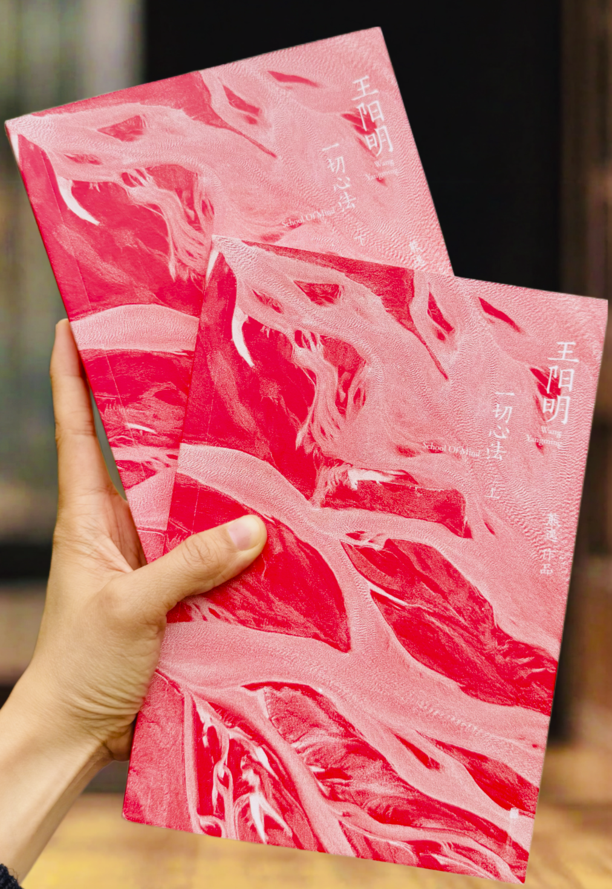
其他书大多会说“知道就要做到”这种正确的废话nonsense[ˈnɒnsens] n. 废话。
熊逸则直接点破：你之所以做不到，是因为你根本没有“真知verity[ˈverəti] n. 真知”。
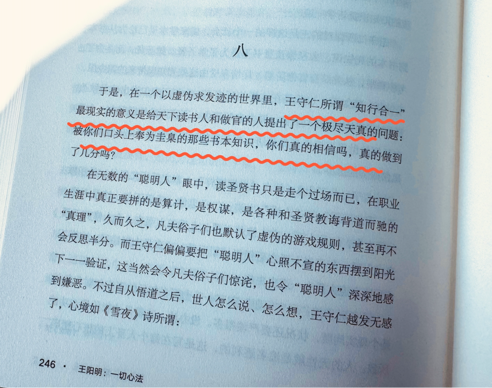
你说你知道熬夜不好，可还在熬，说明你并不真正知道熬夜的代价expense[ɪkˈspens] n. 代价。
你说你知道该行动，可还在拖延procrastinate[proʊˈkræstɪneɪt] v. 拖延，说明你并不真正明白不行动的后果。
仅仅读懂“知行合一”四个字，就能解决人生90%以上的烦恼vexation[vekˈseɪʃən] n. 烦恼！
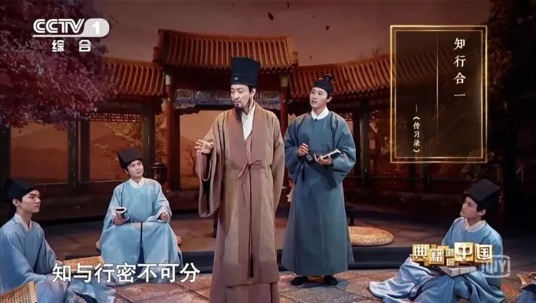
稍微浅薄shallow[ˈʃæloʊ] adj. 浅薄的些，就会理解成，当个有良知的“烂好人”。
熊逸则讲：这三个字意思是，让你在每一个选择的关口，不听外界噪音noise[nɔɪz] n. 噪音，只听从内心那个最真实、最朴素的声音。
那个声音sound[saʊnd] n. 声音，就是你的“良知”！
而不是任何人硬塞给你的道德教条dogma[ˈdɒɡmə] n. 教条。
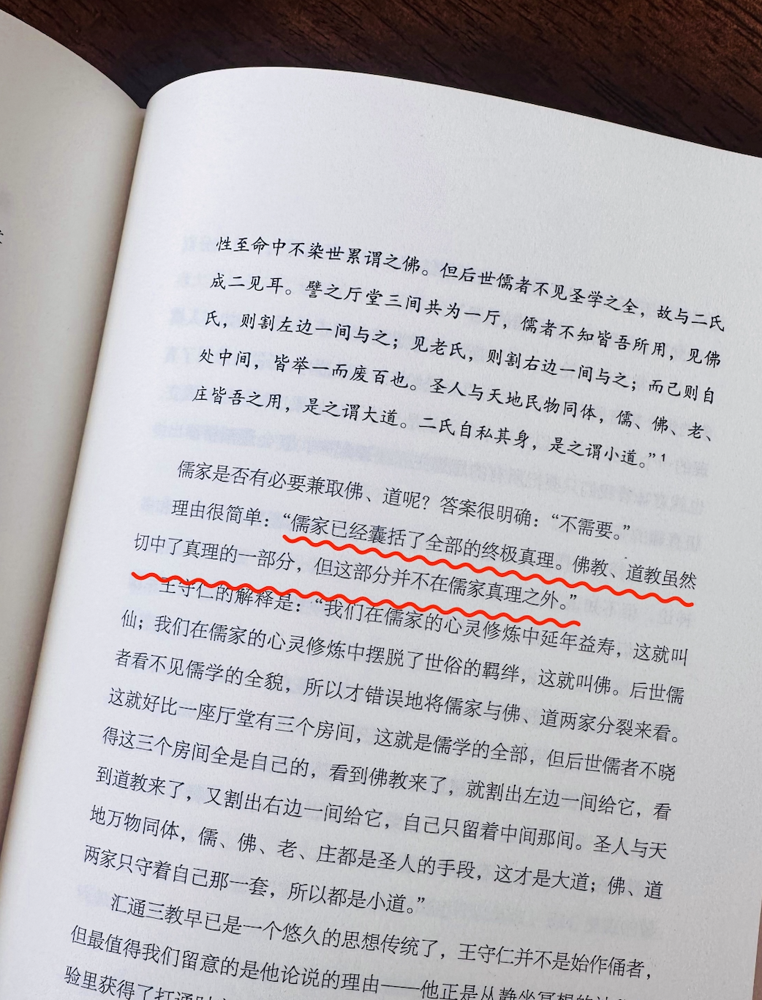
天啊，我第一次读到这样的解读，整个人都麻numb[nʌm] adj. 麻木的了。
原来以前的我，大大低估underrate[ˌʌndəˈreɪt] v. 低估了阳明心学！
熊逸真正做到了把王阳明从神坛shrine[ʃraɪn] n. 神坛上请下来，
还原成一个有血有肉、会犯错、会迷茫confusion[kənˈfjuːʒən] n. 迷茫、但最终靠“心法”逆天改命的普通人。
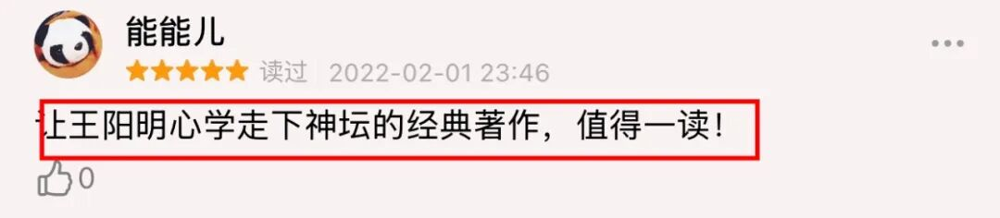
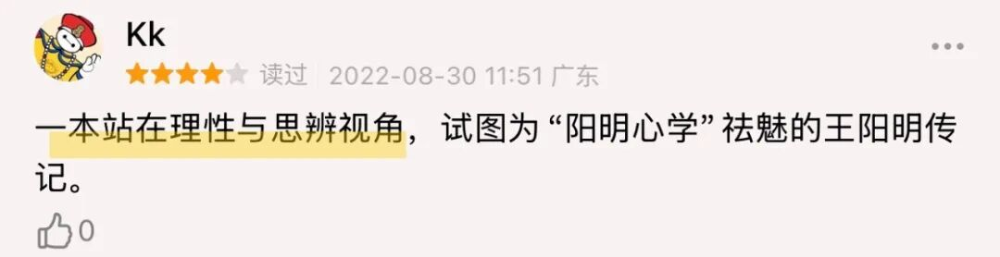
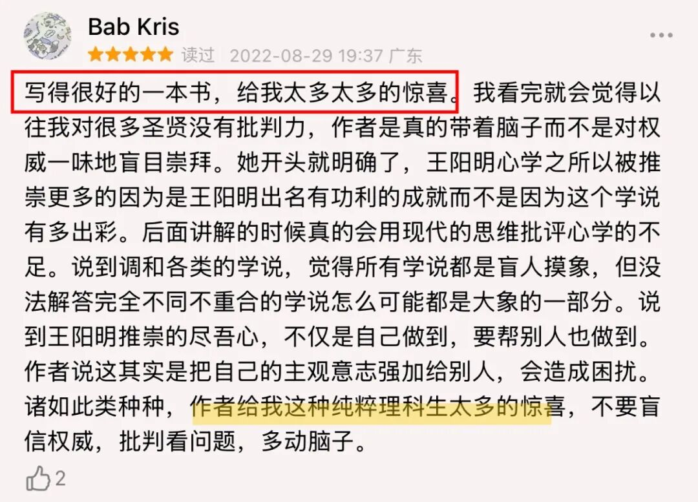
王阳明临终deathbed[ˈdeθbed] n. 临终前，弟子问他有何遗言。
他只留下八个字：“此心光明radiance[ˈreɪdiəns] n. 光明，亦复何言。
一个人最大的成功，不是外在outward[ˈaʊtwərd] adj. 外在的的功名利禄，而是内心的一世光明。
如果你也渴望通过向内求，从认知、心智mentality[menˈtæləti] n. 心智处塑造、提升自己，相信这套书一定不会让你失望。
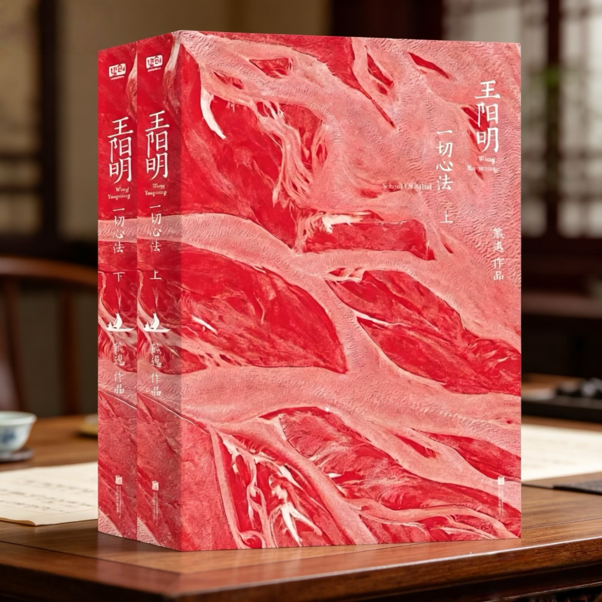
前200名下单用户，还可获得价值49元的知行合一定制customize[ˈkʌstəmaɪz] v. 定制帆布包。
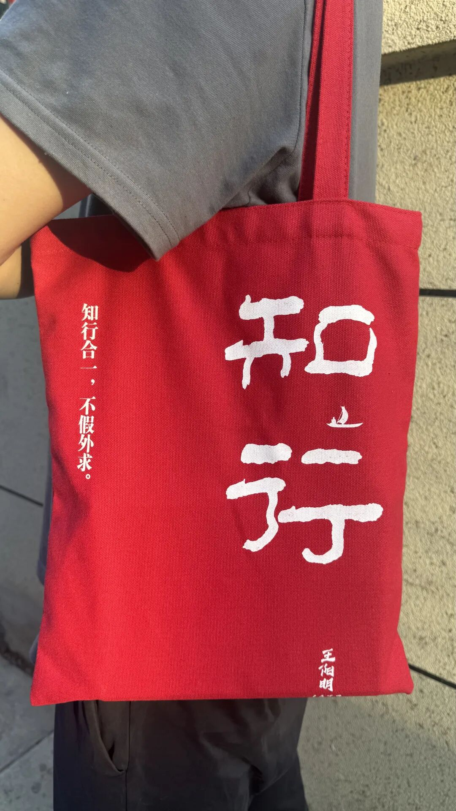
2026全新上市，全套共2册，原价118元，现在仅需69元，优惠discount[ˈdɪskaʊnt] n. 优惠仅限3天。
不到一顿饭的钱，换你一颗不再被外界裹挟overwhelm[ˌoʊvərˈwelm] v. 裹挟的强大内心。这笔投资investment[ɪnˈvestmənt] n. 投资，胜过市面上99%的水课。


焦虑、内耗、拖延、社恐phobia[ˈfoʊbiə] n. 社恐……
你的每一个精神困境，心学都有解药antidote[ˈæntɪdoʊt] n. 解药
为什么今天这个时代era[ˈɪrə] n. 时代，我们比任何时候都更需要王阳明？
因为越是不确定的时代，我们越需要内心的定力poise[pɔɪz] n. 定力。
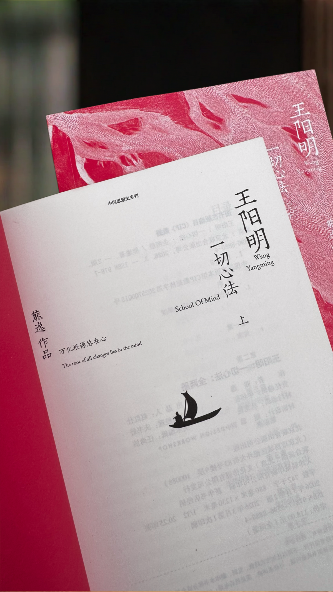
碎片化fragment[ˈfræɡmənt] n. 碎片化的信息、过载的社交、永不停歇的比较——
让我们的“心”被撕扯rend[rend] v. 撕扯得七零八落。
明知道应该勇敢，行为却在退缩retreat[rɪˈtriːt] v. 退缩；
明知道应该勤奋，欲望desire[dɪˈzaɪər] n. 欲望总拖后腿；
明知道该真正追求什么，但在巨大诱惑temptation[tempˈteɪʃən] n. 诱惑面前难免摇摆不定。
500年来，能把这颗困顿distress[dɪˈstres] n. 困顿的心重新收拢、给你定力的人
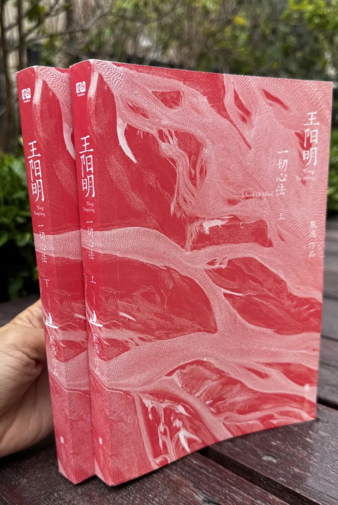
因为他从不是坐在书斋里空想，而是真正从地狱inferno[ɪnˈfɜːrnoʊ] n. 地狱里爬出来的人。
纵观五千年思想史，多少圣贤讲道理、谈修养cultivation[ˌkʌltɪˈveɪʃən] n. 修养，可谁像他一样——
被贬蛮荒、九死一生，不靠外援、没有运气，硬生生凭自我觉醒awaken[əˈweɪkən] v. 觉醒从绝境中杀出一条血路？
真正从泥泞quagmire[ˈkwæɡmaɪər] n. 泥泞里爬起来的人，才最懂如何拉别人一把。
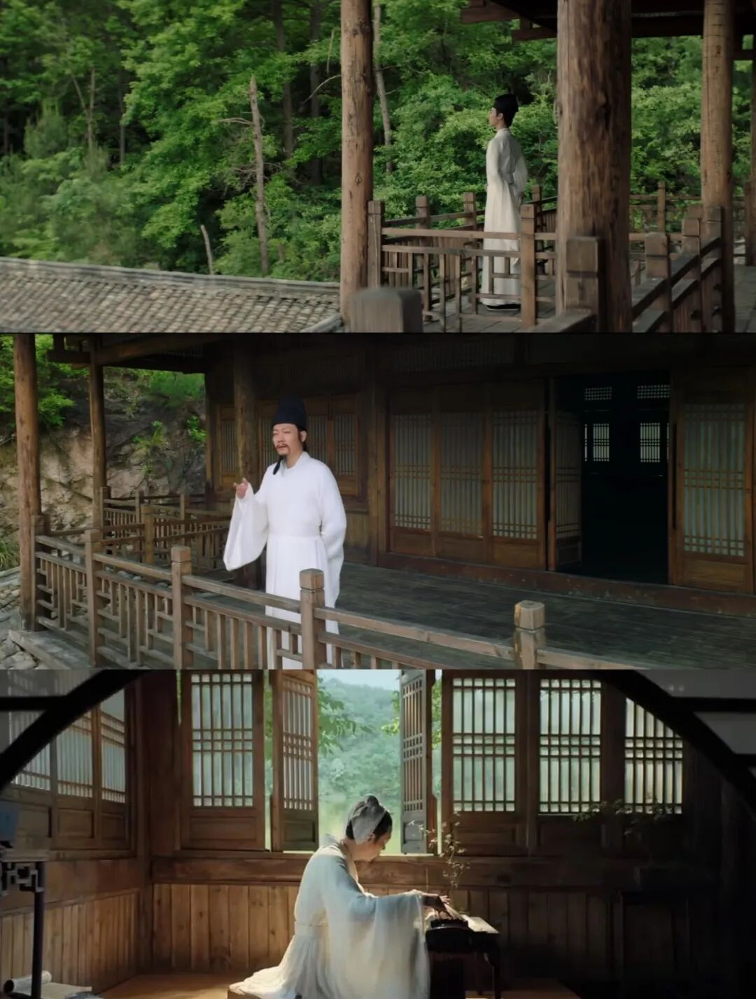
如果你总忍不住焦虑worry[ˈwʌri] v. 焦虑未来——
王阳明说：“过去未来事，思之何益benefit[ˈbenɪfɪt] n. 益处？徒放心distract[dɪˈstrækt] v. 分心耳。”
你焦虑的99%的事情，根本不会发生occur[əˈkɜːr] v. 发生。
把心安在当下，该吃饭吃饭，该睡觉睡觉，这就是修行discipline[ˈdɪsəplɪn] n. 修行。
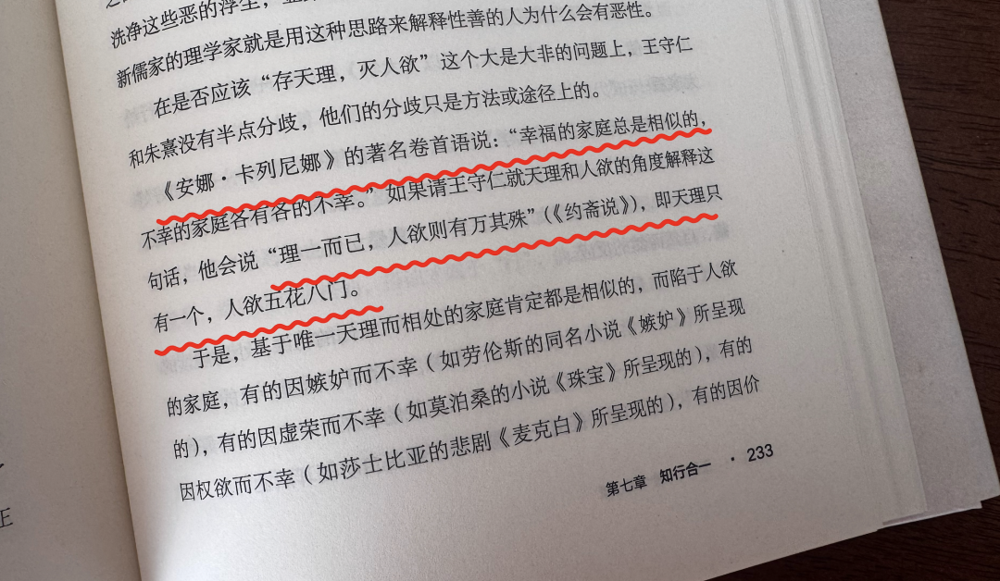
如果你总在意别人的看法opinion[əˈpɪnjən] n. 看法——
王阳明说：“身外之物，何足为喜delight[dɪˈlaɪt] n. 喜悦？何足为怒anger[ˈæŋɡər] n. 愤怒？”
别人怎么看你，那是别人的“心”的问题concern[kənˈsɜːrn] n. 问题，不是你的。
你无法控制别人的心，但你可以控制自己不在意mind[maɪnd] v. 在意。
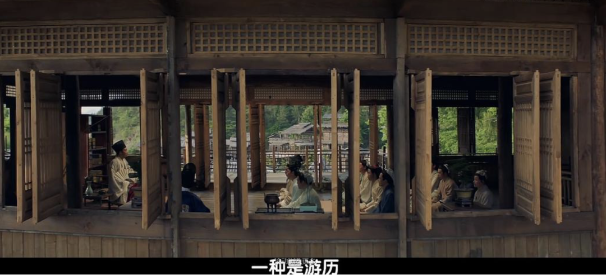
如果你感觉生活没有意义meaning[ˈmiːnɪŋ] n. 意义——
王阳明说：“你未看此花时，此花与汝心同归于寂stillness[ˈstɪlnɪs] n. 寂静。”
意义不是现成的，是你赋予endow[ɪnˈdaʊ] v. 赋予的。
你怎样对待你的工作、你的关系relationship[rɪˈleɪʃənʃɪp] n. 关系、你的一天，意义就在其中。
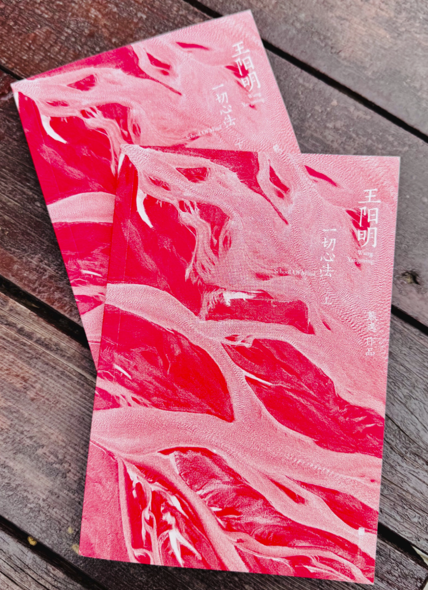
读心学的过程，就像给大脑重装reboot[riːˈbuːt] v. 重装一次系统。
你会发现，那些折磨你多年的“心魔demon[ˈdiːmən] n. 心魔”——
在意他人、害怕失败、反复纠结dilemma[daɪˈlemə] n. 纠结、迟迟不动……
在王阳明面前，不过是一句话就能点破pierce[pɪrs] v. 点破的窗户纸
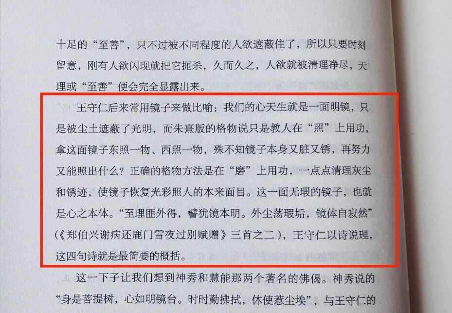
“破山中贼易，破心中within[wɪˈðɪn] adv. 心中贼难”
但当你开始读王阳明，破局breakthrough[ˈbreɪkθruː] n. 破局之刃，便已握在手中！


熊逸独家exclusive[ɪkˈskluːsɪv] adj. 独特的解读：不神化、不鸡汤
把心学从“玄学”变成“实战手册manual[ˈmænjuəl] n. 手册”
很早就想读读真正genuine[ˈdʒenjuɪn] adj. 真正的能看懂的解读王阳明的书，
可惜regret[rɪˈɡret] n. 可惜市面上十本有九本读不下去。
熊逸这套，真正做到了深入浅出、旁征博引、读到过瘾satisfy[ˈsætɪsfaɪ] v. 过瘾。
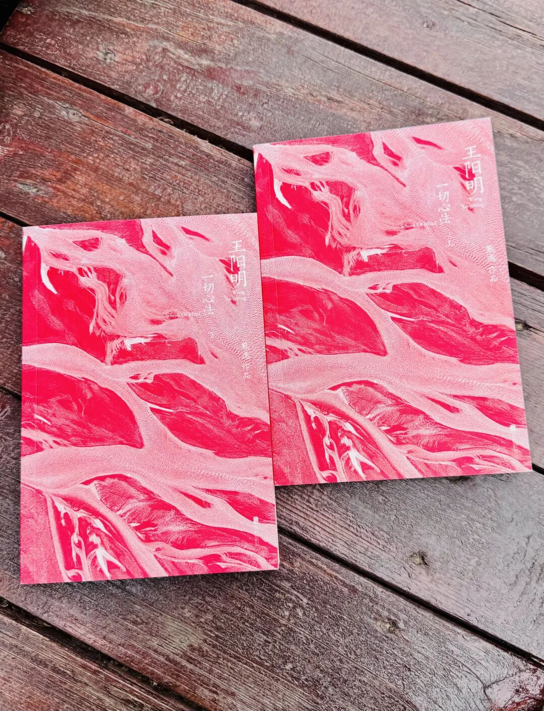
他不仅专研文史数十年，学贯中西，更能跳出“国学圈”的局限limit[ˈlɪmɪt] n. 局限，
用现代人能懂的逻辑logic[ˈlɒdʒɪk] n. 逻辑，拆解心学的底层原理。
◎ 祛魅disenchant[ˌdɪsɪnˈtʃænt] v. 祛魅式解读，让你看见真实的王阳明
打破“圣徒”“完人”的神话滤镜filter[ˈfɪltər] n. 滤镜，从《明史》等典籍中还原这位圣人的跌宕人生——
龙场悟道、平叛宁王、“知行合一”的实践真谛gist[dʒɪst] n. 真谛。
让你知道：圣人也曾有迷茫，心学从不是空谈rhetoric[ˈretərɪk] n. 空谈。
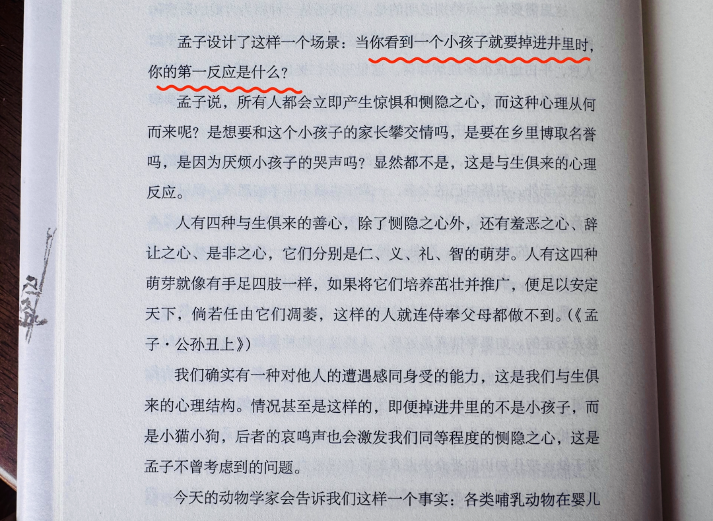
◎ 通俗化表达，零门槛threshold[ˈθreʃhoʊld] n. 门槛也能读懂
没有晦涩术语jargon[ˈdʒɑːrɡən] n. 术语，而是用“故事串讲”的方式，让心学变得鲜活。
关于“吾性自足，不假外求externality[ˌekstɜːrˈnæləti] n. 外求”——
常被解读成“闭门造车”，凡事向内求，自洽coherent[koʊˈhɪrənt] adj. 自洽的就好，不必努力了。
听着治愈，一遇挫折setback[ˈsetbæk] n. 挫折照样崩溃。
熊逸则一针见血指出，“吾性自足，不是让你闭目塞听，而是让你在喧嚣tumult[ˈtjuːmʌlt] n. 喧嚣中守住自己的判断标尺”。
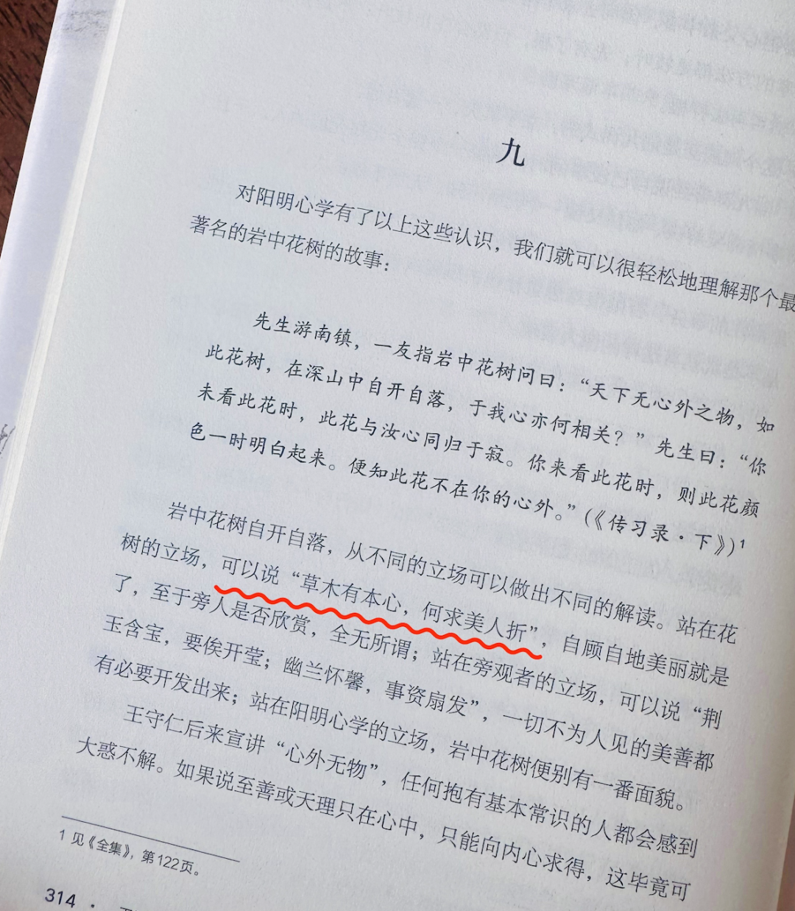
关于“事上磨hone[hoʊn] v. 事上磨炼，事上练”——
别人讲“吃苦就是修行”，让你硬扛endure[ɪnˈdjʊr] v. 硬扛。
熊逸直接颠覆：“事上磨，磨的不是脾气，而是判断力judgment[ˈdʒʌdʒmənt] n. 判断力和行动力”。
这也是为什么悟道illumination[ɪˌluːmɪˈneɪʃən] n. 悟道后的王阳明，变得极其可怕。
一个文弱frail[freɪl] adj. 文弱的书生，成了战场无败绩的战神，官场难撼动的巨石。
这股力量，不是多读了兵书，而是彻底消除了内心的所有摩擦friction[ˈfrɪkʃən] n. 摩擦。
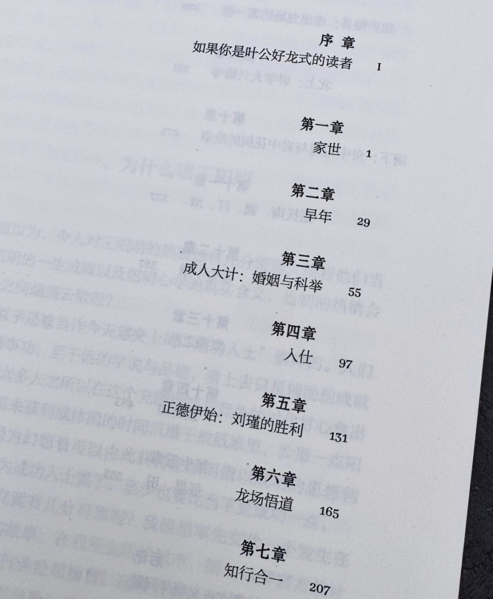
打个比方：你真看见一只老虎tiger[ˈtaɪɡər] n. 老虎扑过来，跑不跑？
你肯定跑，不需要思考ponder[ˈpɒndər] v. 思考，腿比脑子快。
这才是知行合一：念头impulse[ˈɪmpʌls] n. 念头一动，行动即达。
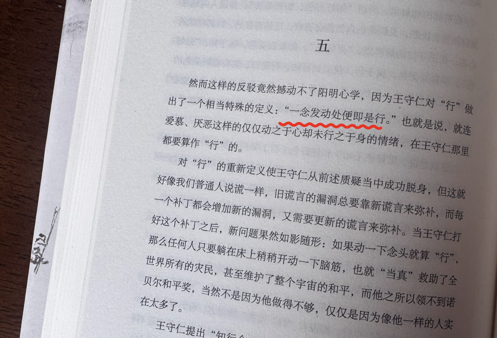
面对宁王数倍强敌，王阳明镇定composure[kəmˈpoʊʒər] n. 镇定得像在讲学。
为什么？因为他看宁王，不再是看作强大对手，而是看一个被贪婪greed[ɡriːd] n. 贪婪和恐惧控制的可怜虫。
一个觉醒者，去打一个梦游者，本身就是一场降维打击strike[straɪk] n. 打击。
这也是王阳明留给我们的启示revelation[ˌrevəˈleɪʃən] n. 启示——
绝大多数人，终其一生活在匮乏scarcity[ˈskersəti] n. 匮乏感里。
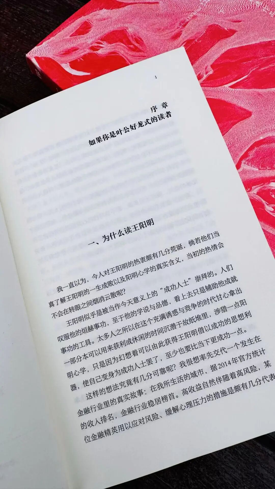
觉得自己不够聪明、不够有钱、不够有地位……于是拼命向外抓取，用外界认可填充内心空洞void[vɔɪd] n. 空洞。
但王阳明告诉你：永远不必迷信任何权威authority[əˈθɒrəti] n. 权威。
你的心，就是宇宙cosmos[ˈkɒzmɒs] n. 宇宙的最高法庭。不需要接受任何外界的审判verdict[ˈvɜːrdɪkt] n. 审判。
“心即理”：你的心，就是最终的道理principle[ˈprɪnsəpl] n. 道理。
点下图抢购，挣脱内心牢笼shackle[ˈʃækl] n. 牢笼▼

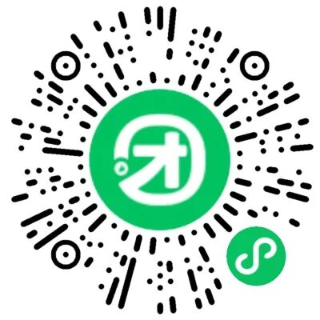
20岁读开窍，30岁读破局，40岁读通透insightful[ˈɪnsaɪtfʊl] adj. 通透的
一套值得反复recur[rɪˈkɜːr] v. 反复翻阅的“人生心法”
这套书共两册，既讲到了王阳明一生的跌宕起伏，又解读了心学的核心精髓essence[ˈesəns] n. 精髓。
全篇白话文vernacular[vərˈnækjələr] n. 白话文，通俗易懂。
越读越开悟，，每一页都有让你想划线的冲动urge[ɜːrdʒ] n. 冲动。
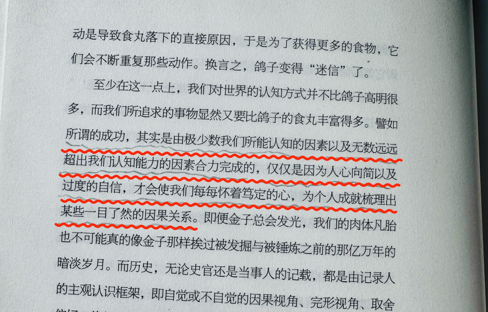
内外双封，外封采用古典classical[ˈklæsɪkl] adj. 古典的水墨元素，内封沉稳大气；
内文纸张柔软护眼，可180度平摊，阅读体验experience[ɪkˈspɪriəns] n. 体验极佳。
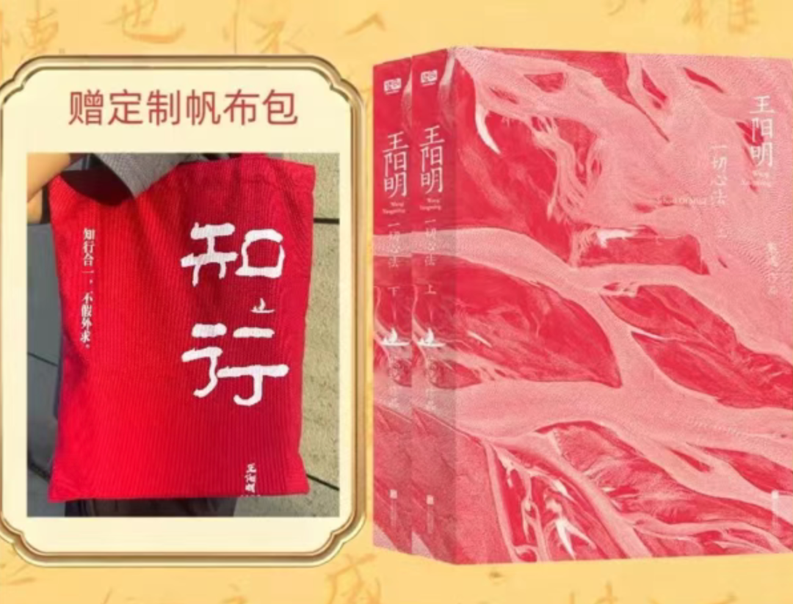
无论你是，想提升认知、打破思维局限的创业者entrepreneur[ˌɑːntrəprəˈnɜːr] n. 创业者，
被焦虑、内耗折磨到睡不着的职场workplace[ˈwɜːrkpleɪs] n. 职场人、宝妈，
还是渴望yearn[jɜːrn] v. 渴望找到人生方向的普通人，都能从中获得力量。
原价118元，现在限时特惠bargain[ˈbɑːrɡən] n. 特惠仅需69元。
不到两张电影票价，就能收获改变人生的智慧wisdom[ˈwɪzdəm] n. 智慧。
最后想分享我每次读，都热泪盈眶teary[ˈtɪri] adj. 热泪盈眶的的一句话，
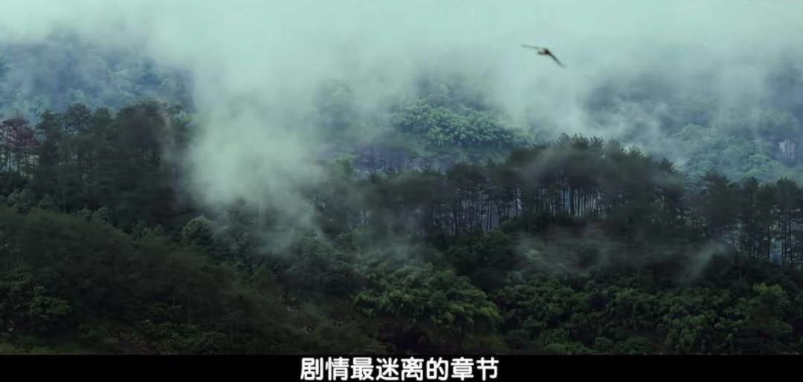
就是王阳明临终mortal[ˈmɔːrtl] adj. 临终的前说的：“此心光明，亦复何言。”
一个人活到生命的尽头，能坦坦荡candid[ˈkændɪd] adj. 坦荡的荡说出这八个字——
愿你读完这套书，也能心中有光，脚下有路pathway[ˈpæθweɪ] n. 路。不惧fear[fɪr] n. 恐惧不忧，知行合一。
前200名下单用户，还可获得obtain[əbˈteɪn] v. 获得价值49元的知行合一定制帆布包。
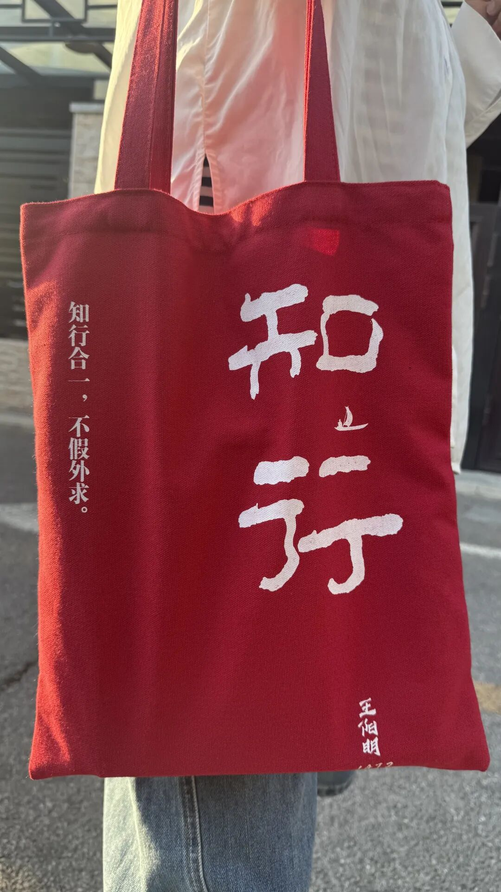
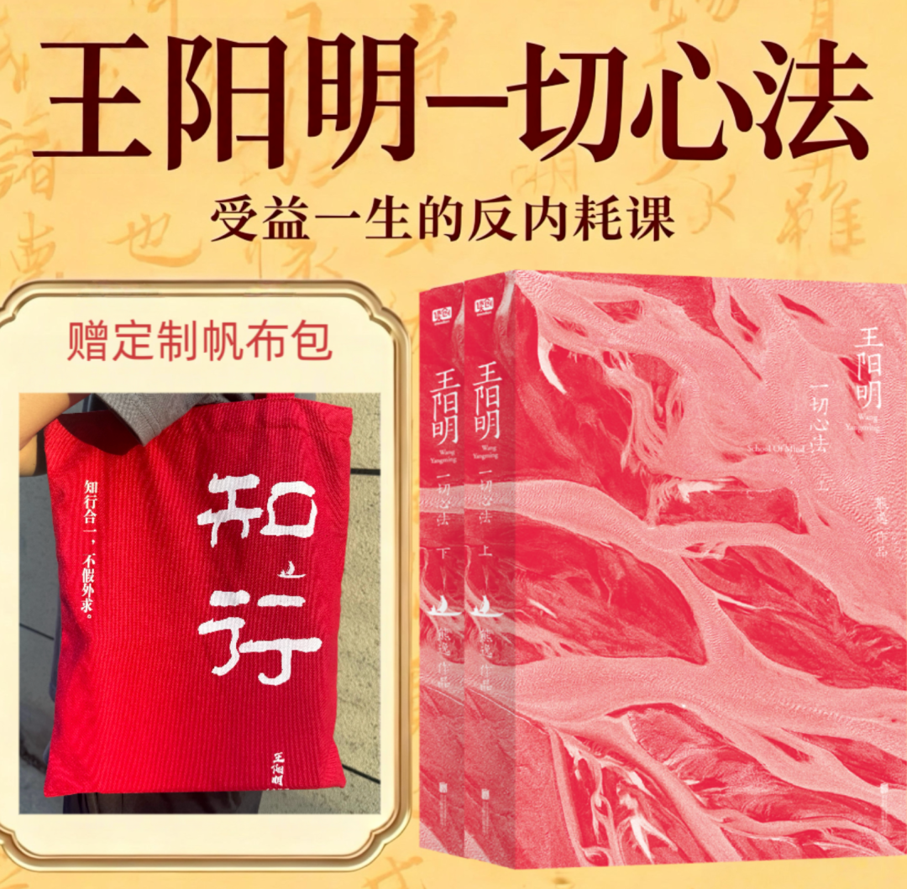


必读好书classic[ˈklæsɪk] n. 经典好书
立减reduce[rɪˈduːs] v. 立减49元
原价original[əˈrɪdʒənl] n. 原价：118
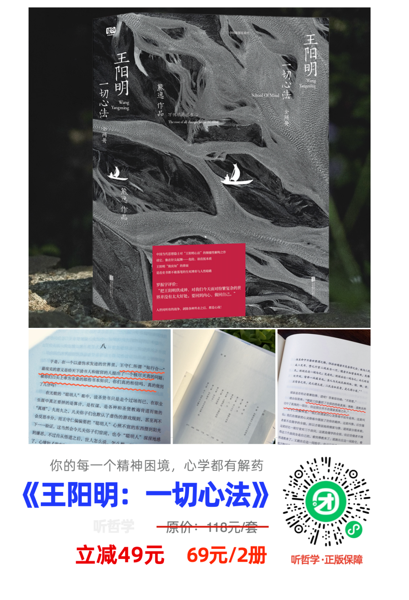
zhexue100zhushou

《哲学philosophy[fɪˈlɒsəfi] n. 哲学100问》